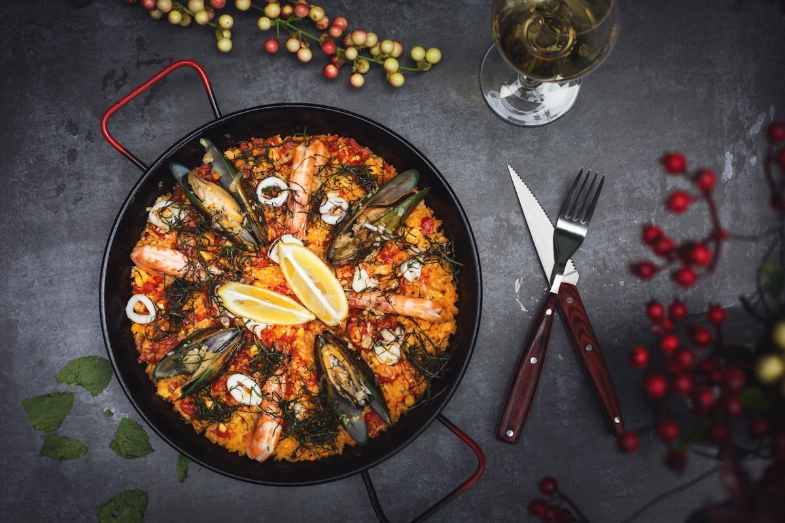

La paella és un plat tradicional valencià amb més de 200 anys d’història. Originàriament preparada en cassoles obertes sobre foc de llenya, acompanyava jornalers i festes familiars a la costa.
La base és una bona sofregit de ceba, tomàquet i pebrot, arròs de gra curt i brou, a més de safrà o colorant. L’equilibri de sabors entre la proteïna, verdures i herbes és clau.
Paella valenciana clàssica inclou pollastre, conill, judia verda plana, garrofó i fesols. Alternativament es poden fer versions marineres amb marisc, o vegetarianes amb carxofes i espàrrecs.
La textura ideal es troba quan l’arròs està cuit però lleugerament ferm, i és important deixar reposar 5-10 minuts abans de servir per combinar perfums i evitar que quedi massa caldós.
Galeria de preparació